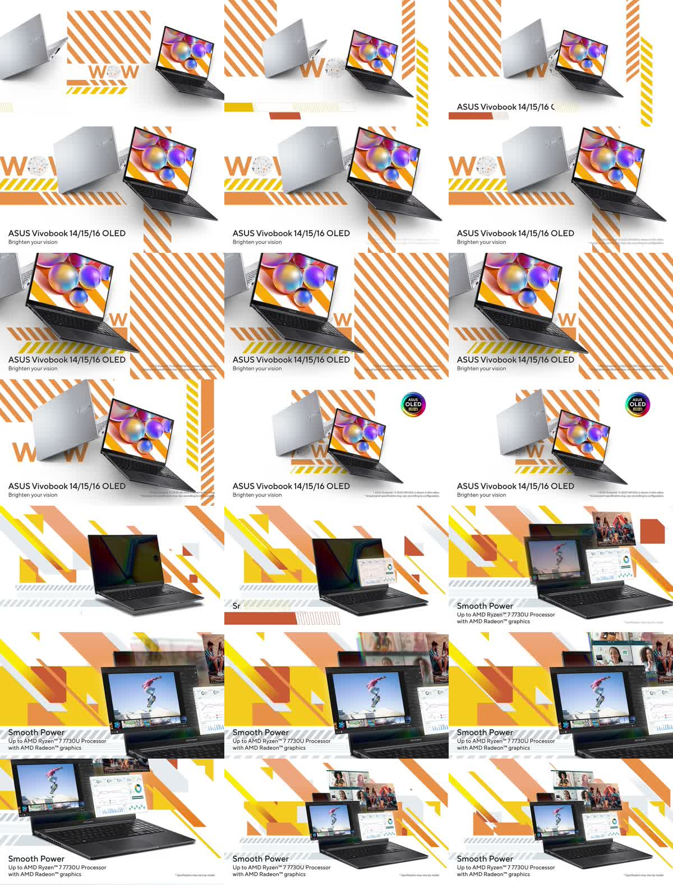
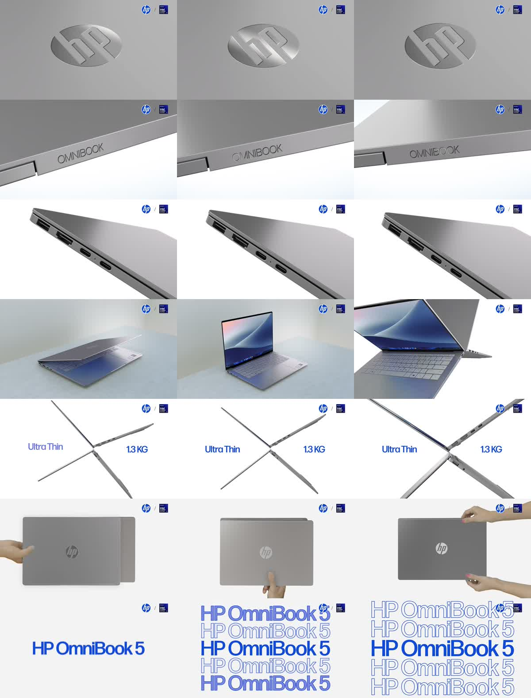
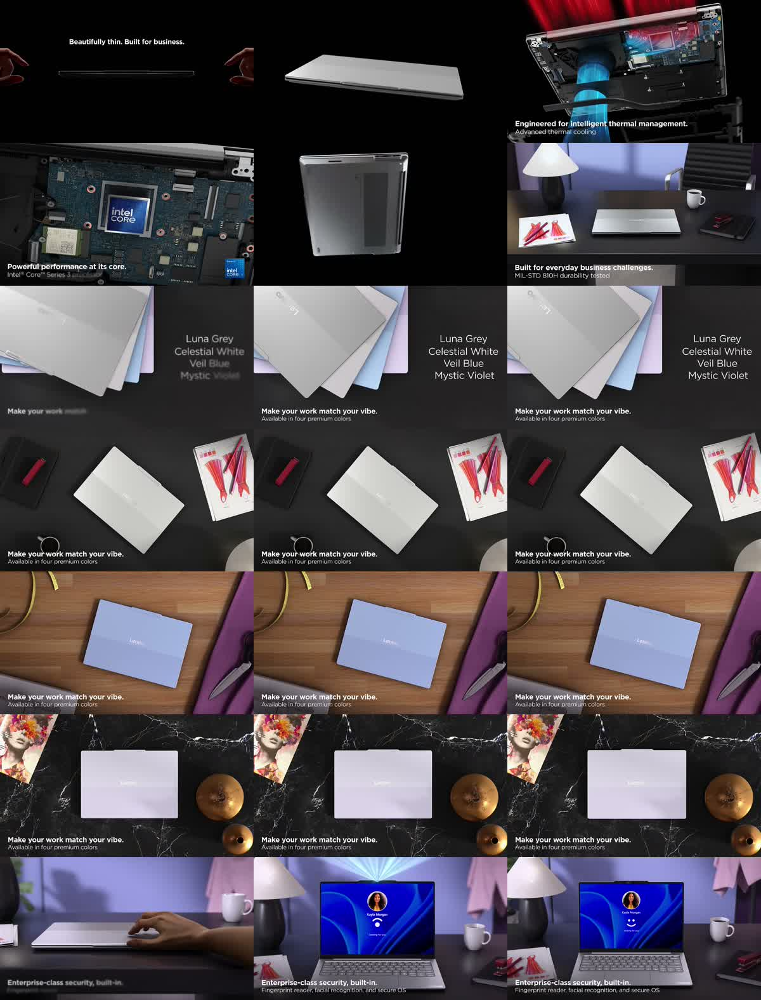
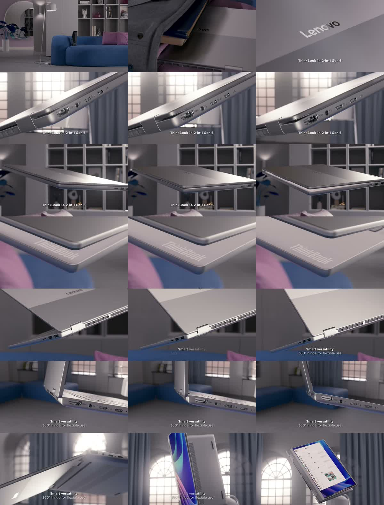
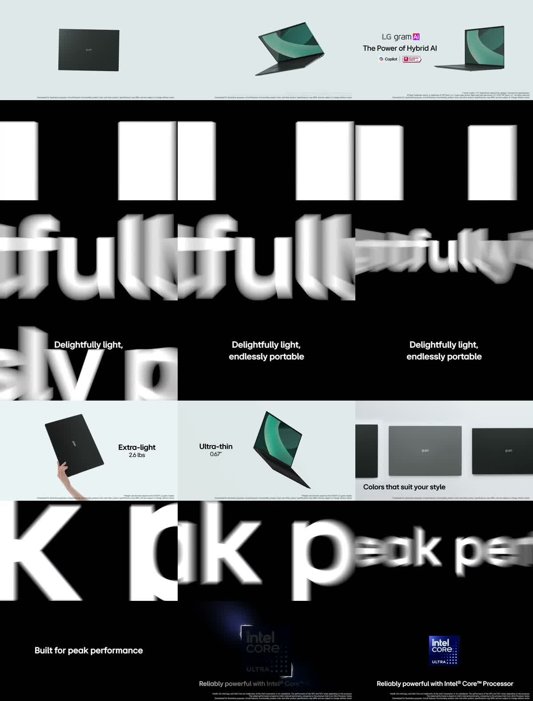
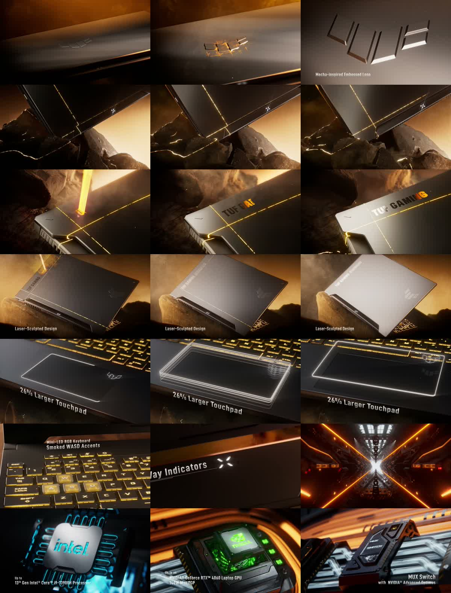
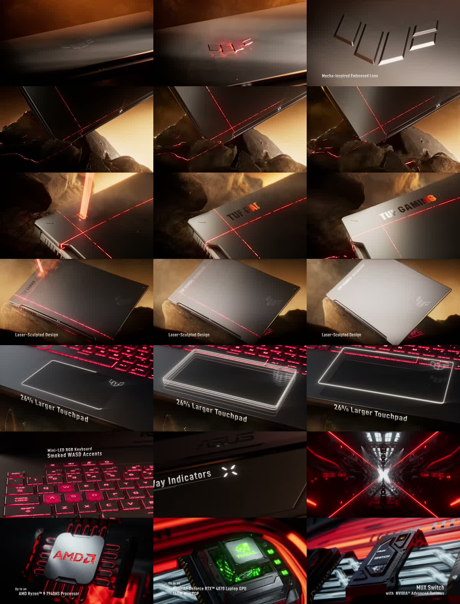

風格片庫 v1：整片層級的風格分群（暫定）
這是統計分群，不是導演定義的風格。182 支影片（177 支用於分群；5 支獲獎作品依既有群心歸入，未重新分群，其中 2 支屬邊緣歸屬）以畫面、節奏、光色、聲音、字卡共 畫面、節奏、聲音、字卡與調色／運鏡標註共 80 多項特徵分成 7 群，輪廓係數 0.077（越接近 1 越分明；這裡很低，表示風格是連續的光譜，群與群的邊界不明顯）。名稱與配方由 Codex 起草，未人工審核；電競向的群只適合借用表現手法。縮圖為相對路徑（../analysis/strips/）。
總覽
| 編號 | 名稱 | 輪廓 | 數量 | 相關度 | 電競占比 |
|---|
| S1 | 白底幾何圖解 | 實拍／CG／動態圖形混合・中速節奏・高調明亮 | 4 | 高 | 0% |
| S2 | 自然明亮日常 | 實拍主導・中速節奏・高調明亮 | 15 | 高 | 7% |
| S3 | 暗室冷暖敘事 | 實拍主導・快節奏・中等亮度 | 45 | 高 | 10% |
| S4 | 柔灰精密空間 | CG 主導・中速節奏・中等亮度 | 31 | 高 | 13% |
| S5 | 潔白留白展示 | 實拍／CG／動態圖形混合・長鏡頭慢節奏・高調明亮 | 17 | 高 | 18% |
| S6 | 冷黑光雕科技 | CG 主導・中速節奏・低調暗色・電競向 | 58 | 低（電競為主，只適合借表現手法） | 52% |
| S7 | 熔金機械秘境 | CG 主導・中速節奏・中等亮度・電競向 | 12 | 低（電競為主，只適合借表現手法） | 82% |
風格
S1｜白底幾何圖解 實拍／CG／動態圖形混合・中速節奏・高調明亮｜4 支｜適合 Acer 辦公者：中（創意判斷）：適合清楚呈現產品與辦公訊息，但缺乏實拍人物，較難單靠此風格建立個
名稱與配方由 Codex（gpt-6-astra）依量測與調色／運鏡標註起草，未人工審核。數字為該群平均，僅反映統計，不代表導演意圖。
風格配方（給 AI 與導演）
以白灰留白、平面幾何或線條動畫及固定產品陳列，形成清楚俐落的圖形廣告。
| 調色配方 | 以明亮潔淨白調為主，亦有近單色作品；採高對比、正常黑位與低整體飽和，飽和度均值 0.15。代表片支持將黃、青藍或橙色集中於幾何圖形及螢幕，並非全畫面增豔。分離調色以不施作為主，冷陰影配暖亮部僅 1 支。顆粒未提供資料，無法指定。 |
|---|
| 運鏡配方 | 動態圖形占 85%，鏡頭感皆標為 CG 虛擬鏡頭，但不等同主要使用立體 CG。固定鏡頭占 65%，以固定畫框及產品陳列為主，讓線條或幾何元素在畫框內移動；穩定度多標混合，不能宣稱全程固定。景深皆為 CG 無景深，不加入攝影式焦外模糊。招牌採定鏡產品陳列，標註 3 支。 |
|---|
| 剪輯節奏 | 平均鏡長 3.3 秒。推論配方：以中等偏短段落切換產品陳列與圖形變化；代表片同時有俐落剪接與舒緩展示，無法確立單一快慢型態，鏡內動畫也不等同剪接點。 |
|---|
| 字卡風格 | 推論配方：字卡利用白底留白，與產品及幾何元素分區排列；位置未量測。字高參考 5.1%，有字鏡頭占 70%，可讓多數段落帶簡短說明；不應因動態圖形占比高就假設文字很多，單鏡字數及字高量測基準未知。 |
|---|
| 聲音 | 響度均值 -12.3 LUFS；無法由圖形動畫推定每個元素都有同步音效。靜音占比及起音密度均未提供，不指定音效觸發頻率。 |
|---|
| 音樂簡報（給 AI 音樂生成） | 曲風傾向：輕快流行 75%、爵士 25%；情緒：溫暖友善 100%；速度感：中（聲音起點密度 3.1/秒）；常含人聲歌唱；整體偏適中（約 -12 LUFS）。 依 CLAP 零樣本標籤與聲音統計彙整（共 4 支；曲速、能量走向、與剪輯同步因不可靠已捨棄；已由人工抽聽 6 支核對） |
|---|
| 適合 Acer | 中（創意判斷）：適合清楚呈現產品與辦公訊息，但缺乏實拍人物，較難單靠此風格建立個人工作情境的代入感。 |
|---|
| 借用提醒 | 可借白底產品陳列、幾何轉場與線條圖解；不建議讓裝飾動畫占滿全片或用圖形表現取代必要的使用示範，此為受眾適配建議。 |
|---|
| 信心與限制 | 低：僅 4 支且 3 支來自同一品牌，白底、圖形與無景深雖一致，仍不足以證明可泛化的獨立風格。輪廓係數 0.077，均值易受單片影響，顆粒、字卡位置及聲音時序亦未知。 |
|---|
生成風格前綴以明亮白灰留白承載固定產品陳列，使用局部鮮明幾何與線條動畫，保持高對比及清楚的平面層次。讓圖形與簡短文字在固定畫框中變化，產品與畫面元素皆保持清晰。
① 風格輪廓（統計）
| 影像類型 | 實拍 0%｜CG 15%｜動態圖形 85%｜螢幕錄影 0% |
|---|
| 鏡頭語言 | 固定 65%｜推拉 32%｜環繞／飛掠／橫移／跟拍／升降 0%｜手持 0%｜近景特寫 26%｜遠景 6% |
|---|
| 光與色 | 平均亮度 159／255｜飽和度 0.15｜暖 21%｜冷 24%｜硬光 27%｜高對比 63%｜逆光 6%｜側光 3%｜平光 77% |
|---|
| 剪輯節奏 | 平均鏡長 3.3s｜每 5 秒切點 1.6 次 |
|---|
| 聲音 | 響度 -12.3 LUFS｜靜音占比 13%｜每秒聲音起點 3.0｜（曲速數字不可靠，未列） |
|---|
| 字卡 | 有字的鏡頭占比 70%｜字高中位 5.1% 畫面高｜常見位置：下左 33%、下右 25%、上左 13%｜中文比例 0%（OCR 包含畫面內 UI 文字，會高估） |
|---|
| 人物 | 有人物動作的鏡頭 0% |
|---|
② 代表片（離群中心最近的 3 支）
ASUS｜ASUS Vivobook 14/15/16 OLED (M1405/M1505/M1605) | 2023 43s｜▶ 原片
ASUS｜ASUS Vivobook 14/15/16/17 (X1404/X1504/X1704/X1405/X1505/X1605) #Intel | 2023 37s｜▶ 原片
ASUS｜ASUS Vivobook Go 14/15 (E1404F/E1504F) #AMD | 2023 47s｜▶ 原片
③ 品牌組成與全部成員
ASUS 3、HP 1｜電競占比 0%
全部 4 支
- ASUS｜ASUS Vivobook 14/15/16 OLED (M1405/M1505/M1605) | 2023 ▶
- ASUS｜ASUS Vivobook Go 14/15 (E1404F/E1504F) #AMD | 2023 ▶
- ASUS｜ASUS Vivobook 14/15/16/17 (X1404/X1504/X1704/X1405/X1505/X16 ▶
- HP｜Introducing HP Dragonfly Pro Series | HP ▶
S2｜自然明亮日常 實拍主導・中速節奏・高調明亮｜15 支｜適合 Acer 辦公者：高（創意判斷）：自然人物與操作實景最容易連結個人辦公者的日常使用，讓輕薄產品融入
名稱與配方由 Codex（gpt-6-astra）依量測與調色／運鏡標註起草，未人工審核。數字為該群平均，僅反映統計，不代表導演意圖。
風格配方（給 AI 與導演）
以自然明亮的生活實景、適中反差與近距離操作，呈現親近而清楚的日常工作感。
| 調色配方 | 以中性自然或明亮潔淨白調為主，暖色生活場景可少量使用；對比統一採中等，黑位以正常為主。飽和度均值 0.23，維持收斂色彩並依代表片保留自然膚色。分離調色以不施作為主，不把少數冷暖分離當成共通設定。顆粒未提供資料，無法指定。 |
|---|
| 運鏡配方 | 實拍占 62%，固定鏡頭占 68%，以人物及操作定鏡為骨架，穿插近距離細節；穩定度與鏡頭感以混合為主，無法指定單一焦段或全程穩定器。景深混用，操作特寫可採淺景深。正面定鏡與手持跟拍各標註 2 支，可作選用手法，不應把全群定義成手持風格。 |
|---|
| 剪輯節奏 | 平均鏡長 3.1 秒。推論配方：以中等偏短鏡頭串接人物、操作和產品，讓定鏡之間的切換帶出輕快感；不推定固定快慢交替，也不把運鏡穩定等同剪輯緩慢。 |
|---|
| 字卡風格 | 推論配方：小字卡放在人物或裝置旁的留白，避開手部操作；位置未量測。字高參考 3.7%，為七群最小，有字鏡頭占 84%，可採頻繁但簡短的輔助文字；不能由此推定單鏡字數，字高量測基準未說明。 |
|---|
| 聲音 | 響度均值 -13.1 LUFS；不能僅憑明亮生活畫面推定聲音輕柔或環境音比例。靜音占比及起音密度均未提供，無法指定。 |
|---|
| 音樂簡報（給 AI 音樂生成） | 曲風傾向：輕快流行 53%、嘻哈節拍 33%、極簡鋼琴 7%（標籤置信度偏低，僅供參考）；情緒：溫暖友善 47%、激勵向上 40%、活力興奮 7%；速度感：快（聲音起點密度 4.3/秒）；以純音樂為主，不依賴旁白；整體偏適中（約 -13 LUFS）。 依 CLAP 零樣本標籤與聲音統計彙整（共 15 支；曲速、能量走向、與剪輯同步因不可靠已捨棄；已由人工抽聽 6 支核對） |
|---|
| 適合 Acer | 高（創意判斷）：自然人物與操作實景最容易連結個人辦公者的日常使用，讓輕薄產品融入可理解的工作情境。 |
|---|
| 借用提醒 | 可整體借用自然膚色、正常黑位、人物定鏡與操作特寫；不必借用個別代表片的奇幻場景或強烈彩光，避免分散辦公用途的焦點。 |
|---|
| 信心與限制 | 中：15 支中，對比與黑位一致，但鏡頭、景深及生活場景仍有差異，適配程度屬創意判斷。輪廓係數 0.077，與其他明亮低彩度群重疊；顆粒、字卡位置與聲音時序未知。 |
|---|
生成風格前綴以自然明亮的工作實景呈現個人使用輕薄筆電，保留自然膚色、中等對比與正常黑位，色彩清爽收斂。人物定鏡穿插近距離操作特寫，以簡短字卡和俐落剪接營造親近的日常感。
① 風格輪廓（統計）
| 影像類型 | 實拍 62%｜CG 10%｜動態圖形 12%｜螢幕錄影 6% |
|---|
| 鏡頭語言 | 固定 68%｜推拉 9%｜環繞／飛掠／橫移／跟拍／升降 4%｜手持 5%｜近景特寫 44%｜遠景 9% |
|---|
| 光與色 | 平均亮度 137／255｜飽和度 0.23｜暖 32%｜冷 35%｜硬光 14%｜高對比 19%｜逆光 2%｜側光 15%｜平光 39% |
|---|
| 剪輯節奏 | 平均鏡長 3.1s｜每 5 秒切點 1.7 次 |
|---|
| 聲音 | 響度 -13.1 LUFS｜靜音占比 5%｜每秒聲音起點 4.2｜（曲速數字不可靠，未列） |
|---|
| 字卡 | 有字的鏡頭占比 84%｜字高中位 3.7% 畫面高｜常見位置：中中 17%、下左 16%、下中 16%｜中文比例 5%（OCR 包含畫面內 UI 文字，會高估） |
|---|
| 人物 | 有人物動作的鏡頭 52% |
|---|
② 代表片（離群中心最近的 3 支）
Google｜More power in your hands with Chromebook Plus 60s｜▶ 原片
HP｜HP OmniBook 5 AI PC | 1.33 KG, 2K OLED, Intel Core Ultra 5 | Visit HP World Store 60s｜▶ 原片
LG｜LG gram Pro 2-in-1 | LG 76s｜▶ 原片
③ 品牌組成與全部成員
LG 4、Acer 3、Apple 2、Samsung 2、HP 2、Google 1｜電競占比 7%
全部 15 支
- Apple｜Hello, MacBook Neo ▶
- Acer｜Acer Swift Air 16 (999g, 16吋輕薄筆電) ▶
- Acer｜Acer Swift Air 16 (999g, OLED大螢幕, 輕薄16吋) ▶
- Acer｜Acer Chromebook Plus Spin 514 | Lightning Fast When Inspirat ▶
- Samsung｜Galaxy Book4 Pro: Official Film | Samsung ▶
- Samsung｜Galaxy Book Go: Official Introduction Film I Samsung ▶
- LG｜2024 LG gram Pro : Introduction Film | gram Link | LG ▶
- LG｜2024 LG gram Pro 2in1 : Introduction Film | Your pro studio ▶
- LG｜LG gram Pro 2-in-1 | LG ▶
- LG｜2023 LG gram SuperSlim : Introduction Film | LG ▶
- HP｜HP OmniBook 5 AI PC | 1.33 KG, 2K OLED, Intel Core Ultra 5 | ▶
- HP｜HP OmniBook 5 OLED AI Laptop Snapdragon X | 34-Hour Battery ▶
- Google｜More power in your hands with Chromebook Plus ▶
- Apple｜y4DnsCzJTRQ ▶
- 外部創意庫｜Super Steady Video | Galaxy S26 Ultra ▶
S3｜暗室冷暖敘事 實拍主導・快節奏・中等亮度｜45 支｜適合 Acer 辦公者：中（創意判斷）：人物實景能承接個人辦公故事，但深暗、高反差容易將輕薄便利的訴求轉
名稱與配方由 Codex（gpt-6-astra）依量測與調色／運鏡標註起草，未人工審核。數字為該群平均，僅反映統計，不代表導演意圖。
風格配方（給 AI 與導演）
以深暗實景、高反差與人物及產品交錯，建立帶有戲劇感的工作敘事。
| 調色配方 | 以深色低調為主要方向，採高對比與壓黑；亮度均值 78、飽和度均值 0.31，僅作組間相對參考，不換算為軟體設定。分離調色可採冷陰影配暖亮部，標註有 15 支，但無分離調色有 18 支，因此冷暖分離是選用手法。顆粒未提供資料，無法指定。 |
|---|
| 運鏡配方 | 實拍占 54%，以固定構圖為骨架，固定鏡頭占 61%，穿插人物推近或空間移動；穩定度與鏡頭感均以混合為主，不能推定大量手持。景深採混合並可偏重人物淺景深。固定構圖、上下搖鏡與空間穿梭可借用，但各招牌標註僅 2–3 支。 |
|---|
| 剪輯節奏 | 平均鏡長 2.5 秒，為七群最短。推論配方：用較頻繁切換串接人物、操作與產品細節，固定鏡頭也可形成俐落節奏；資料不能證明全片持續快切或特定快慢曲線。 |
|---|
| 字卡風格 | 推論配方：字卡置於暗背景留白區，避開臉部及操作區；位置未量測。字高參考 4.7%，有字鏡頭占 64%，可在多數段落加入短訊息；單鏡字數未知，字高量測基準未說明。 |
|---|
| 聲音 | 響度均值 -13.8 LUFS，相較 C4 較低；無法因此判定音樂柔和或留白較多。靜音占比及起音密度均未知，不指定停頓頻率或音效密度。 |
|---|
| 音樂簡報（給 AI 音樂生成） | 曲風傾向：輕快流行 46%、史詩預告大鼓 22%、嘻哈節拍 7%（標籤置信度偏低，僅供參考）；情緒：溫暖友善 34%、暗黑緊張 24%、激勵向上 22%；速度感：中（聲音起點密度 3.3/秒）；以純音樂為主，不依賴旁白；整體偏適中（約 -14 LUFS）。 依 CLAP 零樣本標籤與聲音統計彙整（共 41 支；曲速、能量走向、與剪輯同步因不可靠已捨棄；已由人工抽聽 6 支核對） |
|---|
| 適合 Acer | 中（創意判斷）：人物實景能承接個人辦公故事，但深暗、高反差容易將輕薄便利的訴求轉向戲劇氛圍。 |
|---|
| 借用提醒 | 可借局部柔光、人物淺景深與固定構圖；不建議整套複製懸疑感或極暗操作場景，以免畫面難以交代日常使用，此為受眾適配建議。 |
|---|
| 信心與限制 | 中：41 支中，高對比與壓黑高度集中，但冷暖分離並非多數，鏡頭與穩定度也相當混合。輪廓係數 0.077 限制群間辨識；聲音時序、顆粒與字卡位置未知。 |
|---|
生成風格前綴在深暗工作空間中交錯呈現人物操作與筆電細節，以高反差和深黑陰影塑造戲劇層次，局部保留冷陰影與暖亮部。固定構圖穿插人物推近及空間移動，剪接俐落。
① 風格輪廓（統計）
| 影像類型 | 實拍 54%｜CG 18%｜動態圖形 10%｜螢幕錄影 3% |
|---|
| 鏡頭語言 | 固定 61%｜推拉 18%｜環繞／飛掠／橫移／跟拍／升降 3%｜手持 3%｜近景特寫 42%｜遠景 22% |
|---|
| 光與色 | 平均亮度 78／255｜飽和度 0.31｜暖 29%｜冷 38%｜硬光 14%｜高對比 34%｜逆光 11%｜側光 28%｜平光 21% |
|---|
| 剪輯節奏 | 平均鏡長 2.5s｜每 5 秒切點 2.1 次 |
|---|
| 聲音 | 響度 -13.8 LUFS｜靜音占比 9%｜每秒聲音起點 3.2｜（曲速數字不可靠，未列） |
|---|
| 字卡 | 有字的鏡頭占比 64%｜字高中位 4.7% 畫面高｜常見位置：中中 19%、下左 16%、下中 13%｜中文比例 0%（OCR 包含畫面內 UI 文字，會高估） |
|---|
| 人物 | 有人物動作的鏡頭 37% |
|---|
② 代表片（離群中心最近的 3 支）
Samsung｜Galaxy Book4 Edge: Official Film | Samsung 104s｜▶ 原片
外部創意庫｜Coca-Cola | Holidays are Coming, Behind the Scenes（成片：Holidays Are Coming） 163s｜▶ 原片
Lenovo｜Meet Lenovo ThinkBook 14x Gen 2 (2026) | Ultra-Thin. Four Colors. Full PC Productivity. 62s｜▶ 原片
③ 品牌組成與全部成員
Samsung 7、Acer 5、Huawei 5、外部創意庫 5、Lenovo 4、Microsoft 4｜電競占比 10%
全部 45 支
- Apple｜MacBook Pro: The most advanced Mac laptop for demanding task ▶
- Apple｜The new MacBook Pro with M5 Pro and M5 Max ▶
- ASUS｜Behind Game Tough - Quality and Durability - TUF Gaming | AS ▶
- ASUS｜ASUS Zenbook 14 OLED (UX3405) #Intel | 2023 ▶
- Acer｜Swift Go AI PC - The Tent | We Got You | Acer ▶
- Acer｜Swift Go AI PC - The View | We Got You | Acer ▶
- Acer｜Unveiling the Acer Swift Go AI: Experience Pure Sound with A ▶
- Acer｜Acer Swift Air 14 | Ultra-Thin, Lightweight, and Ready to Mo ▶
- Acer｜Inspiration Becomes Creation | Swift 14 AI Copilot+ PC | Ace ▶
- Samsung｜Introducing Galaxy Book5 Pro | Samsung ▶
- Samsung｜Ecosystem | Galaxy S26 Ultra | Galaxy Book6 Pro | Samsung ▶
- Samsung｜Galaxy Book4 Edge: Official Film | Samsung ▶
- Samsung｜Samsung Galaxy Book4 Serie | Introduction Film ▶
- Samsung｜Galaxy Book4 Pro | Film Editing ▶
- Samsung｜Galaxy Book3 Pro | Official Launch Film | Samsung ▶
- Samsung｜Introducing Samsung Galaxy Book 3 Pro | Official Video | Sam ▶
- LG｜2024 LG gram Pro : Introduction Film | Level up to pro | LG ▶
- LG｜2024 LG gram Pro : Introduction Film | Lightness, thinness, ▶
- LG｜2023 LG gram Style : Time to Shine with NewJeans | LG ▶
- Dell｜Windows 11 Refresh - Dell Pro 16 Plus ▶
- HP｜HP Spectre x360 15 | HP ▶
- HP｜HP Spectre x360: AI Gesture Control | AI Laptop | #IntelCore ▶
- Lenovo｜Introducing the Lenovo Yoga Slim 7x ▶
- Lenovo｜Lenovo Yoga Slim 7x Gen 11 – predstavenie ▶
- Lenovo｜Introducing the Lenovo Yoga 9i 2-in-1 Aura Edition ▶
- Lenovo｜Meet Lenovo ThinkBook 14x Gen 2 (2026) | Ultra-Thin. Four Co ▶
- Microsoft｜Surface Laptop Ultra | Stepping into the future ▶
- Microsoft｜Meet the new Surface Copilot+ PCs ▶
- Microsoft｜The Power of Copilot+ PCs ▶
- Microsoft｜Microsoft Copilot: Your everyday AI companion ▶
- Huawei｜HUAWEI MateBook X Pro - New Smart Conferencing ▶
- Huawei｜HUAWEI MateBook X Pro | TVC ▶
- Huawei｜Introducing HUAWEI MateBook 14 - 2.8K OLED Touch-Control Scr ▶
- Huawei｜Huawei - MATEBOOK 14 2021 ▶
- Huawei｜Introducing the MateBook 14 ▶
- Apple｜Mac Students: The journey to great ideas in college ▶
- 外部創意庫｜The new MacBook Air | Supercharged by M2 ▶
- 外部創意庫｜Sony | FX3 | Cinema Line ▶
- 外部創意庫｜30s｜For the stories that keep us close｜BRAVIA 2026 ▶
- 外部創意庫｜Coca-Cola | Holidays are Coming, Behind the Scenes（成片：Holida ▶
- 外部創意庫｜Kling Motion Control 3.0 ▶
- 獎項作品 獎項作品｜AirPods – Bounce （Apple（品牌）；D&AD 作品庫：AirPods – Bounce（2020，頁面顯示 2 個 Yellow、3 個 Graphite Pencil）｜已讀取（Pencil 數量；各獎對應類別未標）） ▶
- 獎項作品 獎項作品｜AirPods – Quiet The Noise （Apple（品牌）；D&AD 作品庫：AirPods – Quiet The Noise（頁面顯示 2 個 Graphite、1 個 Wood Pencil；2024）｜已讀取） ▶
- 獎項作品 獎項作品｜iPhone 15 Precision Finding｜Find Your Friends （Apple（品牌）；D&AD 作品庫：Find Your Friends（2025，Film，Wood Pencil）｜已讀取） ▶
- 獎項作品 獎項作品｜Samsung Official TVC: Ostrich（30s version） （Samsung（品牌）；Samsung 新聞稿（我已讀取）：Cannes Lions 2017，3 金（Film Craft：導演、動畫、視覺特效）＋2 銀＋2 銅，共 7 項｜已讀取（品牌自述，非官方資料庫）） ▶
S4｜柔灰精密空間 CG 主導・中速節奏・中等亮度｜31 支｜適合 Acer 辦公者：高（創意判斷）：柔灰空間與機身細節適合傳達個人辦公者重視的俐落外觀與精緻工作環境
名稱與配方由 Codex（gpt-6-astra）依量測與調色／運鏡標註起草，未人工審核。數字為該群平均，僅反映統計，不代表導演意圖。
風格配方（給 AI 與導演）
以低彩度灰色空間、柔和金屬反光與虛擬鏡頭，呈現沉穩精密的產品質感。
| 調色配方 | 色調以低飽和灰調為主，冷灰可作方向，但不是全群共同特徵；對比採中等、黑位維持正常。飽和度收斂，量測均值為 0.20，不能直接當作調色軟體參數。分離調色以不施作為主；藍紫陰影僅有代表片支持，不列為必要條件。顆粒未提供資料，無法指定。 |
|---|
| 運鏡配方 | 以平滑的 CG 虛擬鏡頭為主，固定構圖穿插緩推緩移；固定鏡頭占 46%，不宜全片持續移動。景深混用，材質特寫可採淺景深。產品推近可作招牌手法，但僅標註 2 支；穩定度另有 10 支未知，不能視為全群一致。 |
|---|
| 剪輯節奏 | 平均鏡長 3.6 秒。推論配方：以中等長度鏡頭串接空間展示與材質特寫，讓緩慢運鏡形成從容感；實際快慢交替與鏡長分布未知，無法認定有固定加速段。 |
|---|
| 字卡風格 | 推論配方：字卡放在產品側邊或空間留白處，避免遮擋金屬細節；位置未量測。字高參考 5.6%，有字鏡頭占 67%，可讓多數鏡頭承載簡短訊息；比例不代表單鏡字數多，字高百分比的量測基準未說明。 |
|---|
| 聲音 | 響度均值 -12.3 LUFS，可作原片聲音強度的參考，不能由此推定動態範圍；靜音占比及起音密度均未提供，無法指定。 |
|---|
| 音樂簡報（給 AI 音樂生成） | 曲風傾向：嘻哈節拍 42%、輕快流行 39%、電子舞曲 6%（標籤置信度偏低，僅供參考）；情緒：溫暖友善 45%、激勵向上 32%、未來科技 10%；速度感：中（聲音起點密度 3.8/秒）；以純音樂為主，不依賴旁白；整體偏適中（約 -12 LUFS）。 依 CLAP 零樣本標籤與聲音統計彙整（共 31 支；曲速、能量走向、與剪輯同步因不可靠已捨棄；已由人工抽聽 6 支核對） |
|---|
| 適合 Acer | 高（創意判斷）：柔灰空間與機身細節適合傳達個人辦公者重視的俐落外觀與精緻工作環境。 |
|---|
| 借用提醒 | 可借柔光、金屬材質特寫與緩推；若整套採用，建議補入個人操作情境，避免抽象空間展示占滿全片而弱化辦公用途，此為受眾適配建議。 |
|---|
| 信心與限制 | 中：31 支中，對比與黑位較集中，色調、運動及景深仍有混合；整體輪廓係數僅 0.077，應視為可重疊的風格方向。缺少顆粒、字卡位置、靜音與起音密度資料。 |
|---|
生成風格前綴以低彩度灰色空間和柔和金屬反光呈現輕薄筆電，維持中等對比與自然黑位。採平滑虛擬鏡頭、緩推和材質特寫，穿插固定構圖，營造沉穩精密的工作氛圍。
① 風格輪廓（統計）
| 影像類型 | 實拍 20%｜CG 62%｜動態圖形 8%｜螢幕錄影 0% |
|---|
| 鏡頭語言 | 固定 46%｜推拉 26%｜環繞／飛掠／橫移／跟拍／升降 2%｜手持 2%｜近景特寫 42%｜遠景 21% |
|---|
| 光與色 | 平均亮度 116／255｜飽和度 0.20｜暖 20%｜冷 46%｜硬光 13%｜高對比 19%｜逆光 8%｜側光 38%｜平光 19% |
|---|
| 剪輯節奏 | 平均鏡長 3.6s｜每 5 秒切點 1.5 次 |
|---|
| 聲音 | 響度 -12.3 LUFS｜靜音占比 8%｜每秒聲音起點 3.7｜（曲速數字不可靠，未列） |
|---|
| 字卡 | 有字的鏡頭占比 67%｜字高中位 5.6% 畫面高｜常見位置：中中 22%、下中 16%、下左 11%｜中文比例 1%（OCR 包含畫面內 UI 文字，會高估） |
|---|
| 人物 | 有人物動作的鏡頭 14% |
|---|
② 代表片（離群中心最近的 3 支）
ASUS｜ASUS Zenbook Pro 14 OLED (UX6404) #Intel | 2023 53s｜▶ 原片
Lenovo｜Lenovo ThinkBook 14 2-in-1 Gen 5 - Versatile and Powerful. Designed for Work and Creativity. 60s｜▶ 原片
Lenovo｜Lenovo ThinkBook 14 Gen 6 2-in-1 (2026) – Portable Copilot+ PC for SMB Pros 67s｜▶ 原片
③ 品牌組成與全部成員
ASUS 8、Acer 5、Dell 4、Lenovo 4、外部創意庫 3、LG 2｜電競占比 13%
全部 31 支
- ASUS｜ASUS Zenbook S16 (UM5606) | 2026 ▶
- ASUS｜ASUS Zenbook 源自美力｜完整版 ▶
- ASUS｜ASUS Vivobook S 14/15/16 OLED (M5406/M5506/M5606) #AMD | 202 ▶
- ASUS｜ASUS Zenbook 14 OLED (UM3406) #AMD | 2024 ▶
- ASUS｜ASUS Zenbook DUO (2024) UX8406 #Intel ▶
- ASUS｜ASUS Zenbook Pro 14 OLED (UX6404) #Intel | 2023 ▶
- ASUS｜2022 ROG Zephyrus G15 - Game For Anything ▶
- ASUS｜The Most Powerful Gaming Tablet - ROG Flow Z13 | ROG ▶
- Acer｜2025 Swift Go 14 and 16 | Engineered to Go | Acer ▶
- Acer｜Swift 14 AI | Swift 16 AI | AI-Powered Performance for Days ▶
- Acer｜2024 Swift Go 14 / 16 | Unlock AI on the Go | Acer ▶
- Acer｜Aspire Go 14 | Easy on the Go | Acer ▶
- Acer｜Acer Chromebook Plus 515 – A Chromebook Designed for Your Dy ▶
- LG｜2026 LG gram Pro AI : Official Introduction Film | LG ▶
- LG｜LG 17Z90N: LG gram 17�� Ultra-Lightweight Laptop with 10th G ▶
- Dell｜Dell XPS 13 Laptop: Ultra-Thin. Ultra-Light. Built to Perfor ▶
- Dell｜Dell XPS Laptop: Crafted for Creativity and Performance ▶
- Dell｜Librez votre crativit avec le nouveau Dell XPS 13 Plus ▶
- Dell｜XPS Googlebook (2026) Product Overview ▶
- Lenovo｜Lenovo Yoga Pro 9n Unveiled: Desktop-Class Performance in a ▶
- Lenovo｜Lenovo ThinkBook 14 Gen 6 2-in-1 (2026) – Portable Copilot+ ▶
- Lenovo｜Lenovo ThinkBook 14 2-in-1 Gen 5 - Versatile and Powerful. D ▶
- Lenovo｜Meet the new Lenovo ThinkBook 14 i Gen 6+ ▶
- Microsoft｜Meet the new Surface Laptop and Surface Pro ▶
- Microsoft｜Introducing Copilot+ PCs ▶
- Huawei｜Introducing HUAWEI MateBook X Pro - Creation of Beauty ▶
- MSI｜Summit 13 AI+ Evo A2VM – Next-Level AI PC | MSI ▶
- Apple｜The new Mac mini with M6 ▶
- 外部創意庫｜2022 UNIQLO Ultra Light Down ▶
- 外部創意庫｜Coca-Cola® Masterpiece | :30 ▶
- 外部創意庫｜WH-1000XM6 Olive Gray Design Video ▶
S5｜潔白留白展示 實拍／CG／動態圖形混合・長鏡頭慢節奏・高調明亮｜17 支｜適合 Acer 辦公者：高（創意判斷）：清晰結構展示與充分閱讀時間，適合向個人辦公者傳達輕薄外觀和實際使
名稱與配方由 Codex（gpt-6-astra）依量測與調色／運鏡標註起草，未人工審核。數字為該群平均，僅反映統計，不代表導演意圖。
風格配方（給 AI 與導演）
以明亮白色背景、長時間固定展示與高字卡覆蓋率，清楚呈現產品結構及功能訊息。
| 調色配方 | 以明亮潔淨白調和低彩度為主，飽和度均值 0.16；對比採中等至高，兩者各 7 支，不將白底誤作低對比。黑位以正常為主，分離調色以不施作為主。代表片支持把鮮彩集中於螢幕，局部可切換黑底。顆粒未提供資料，無法指定。 |
|---|
| 運鏡配方 | 固定鏡頭占 73%，採穩定定鏡及靜態構圖為主，少量緩推；鏡頭感可採 CG 虛擬鏡頭或標準視角，沒有焦段數據。景深以深景深及混合為主，確保產品結構清楚。懸浮產品定鏡可借，但僅 1 支標註，不作全群必要特徵。 |
|---|
| 剪輯節奏 | 平均鏡長 10.3 秒，顯著長於其他群。推論配方：在 45–60 秒內用少量長展示段承載產品與文字變化；單鏡可有圖形或內容更新，因此長鏡頭不等於全畫面靜止。分布及離群值未知，不能要求每鏡都接近均值。 |
|---|
| 字卡風格 | 推論配方：利用白底留白安排產品側邊字卡，或使用獨立字卡畫面；位置未量測。字高參考 6.8%，有字鏡頭占 85%，兩者均為七群最高，可讓文字成為主要資訊層；不代表應堆疊長文，字高量測基準未說明。 |
|---|
| 聲音 | 響度均值 -14.4 LUFS，為七群最低；僅能判定平均響度相對較低，不能推定安靜段較多。靜音占比及起音密度均未知。 |
|---|
| 音樂簡報（給 AI 音樂生成） | 曲風傾向：輕快流行 41%、嘻哈節拍 18%、電子舞曲 18%（標籤置信度偏低，僅供參考）；情緒：溫暖友善 35%、激勵向上 35%、未來科技 12%；速度感：快（聲音起點密度 4.1/秒）；以純音樂為主，不依賴旁白；整體偏適中（約 -14 LUFS）。 依 CLAP 零樣本標籤與聲音統計彙整（共 17 支；曲速、能量走向、與剪輯同步因不可靠已捨棄；已由人工抽聽 6 支核對） |
|---|
| 適合 Acer | 高（創意判斷）：清晰結構展示與充分閱讀時間，適合向個人辦公者傳達輕薄外觀和實際使用重點。 |
|---|
| 借用提醒 | 可整體借用白底、固定展示與清楚字卡；避免機械式延長每個鏡頭或堆滿文字，建議以操作內容變化維持觀看動機，此為製作建議。 |
|---|
| 信心與限制 | 中：17 支支持白底、靜態與文字導向，但對比並無單一主流，平均鏡長也缺少分布可驗證。輪廓係數 0.077，與其他明亮群可能重疊；顆粒、聲音時序及字卡位置未知。 |
|---|
生成風格前綴以潔淨白底、低彩度產品與清楚的深色文字構成簡潔展示，保留正常黑位，讓鮮彩集中在螢幕內容。採固定構圖與清晰景深，讓產品展示和字卡在從容停留中逐步展開。
① 風格輪廓（統計）
| 影像類型 | 實拍 12%｜CG 28%｜動態圖形 29%｜螢幕錄影 4% |
|---|
| 鏡頭語言 | 固定 73%｜推拉 13%｜環繞／飛掠／橫移／跟拍／升降 4%｜手持 0%｜近景特寫 24%｜遠景 11% |
|---|
| 光與色 | 平均亮度 162／255｜飽和度 0.16｜暖 28%｜冷 32%｜硬光 5%｜高對比 18%｜逆光 1%｜側光 13%｜平光 65% |
|---|
| 剪輯節奏 | 平均鏡長 10.3s｜每 5 秒切點 0.6 次 |
|---|
| 聲音 | 響度 -14.4 LUFS｜靜音占比 9%｜每秒聲音起點 4.0｜（曲速數字不可靠，未列） |
|---|
| 字卡 | 有字的鏡頭占比 85%｜字高中位 6.8% 畫面高｜常見位置：中中 15%、下右 15%、下中 12%｜中文比例 5%（OCR 包含畫面內 UI 文字，會高估） |
|---|
| 人物 | 有人物動作的鏡頭 5% |
|---|
② 代表片（離群中心最近的 3 支）
LG｜The 2025 LG gram laptops - lightweight laptops enhanced with Hybrid AI 70s｜▶ 原片
ASUS｜Let's DUO it - ASUS Zenbook DUO (2024) UX8406 #Intel 58s｜▶ 原片
外部創意庫｜iPhone Air: Incredibly light and thin 54s｜▶ 原片
③ 品牌組成與全部成員
HP 5、Dell 4、Acer 2、外部創意庫 2、ASUS 1、LG 1｜電競占比 18%
全部 17 支
- ASUS｜Let's DUO it - ASUS Zenbook DUO (2024) UX8406 #Intel ▶
- Acer｜Acer Swift Go 14 AI（清單標題為亂碼，618促銷版） ▶
- Acer｜Acer | Swift ▶
- LG｜The 2025 LG gram laptops - lightweight laptops enhanced with ▶
- Dell｜Dell Pro 14 Premium Laptop ▶
- Dell｜Dell Pro 14 Premium - CES 2025 Innovation Awards（清單標題後半為亂碼） ▶
- Dell｜Dell Pro 14 - 16 Premium EcoLoop Briefcase - CC7625 ▶
- Dell｜Dell Pro Max 14 ���O���q���A�u�����į�U�z�u�������� AI ▶
- HP｜HP Spectre 14 x360 ▶
- HP｜HP Spectre Laptops and 2-in-1 PCs | HP Spectre x360 | HP ▶
- HP｜Ask for HP OmniBook Ultra Flip 14 Next Gen AI PC ▶
- HP｜Unleash your potential with the New HP OmniBook X 14-inch AI ▶
- HP｜The all-new HP Pavilion Aero 13 with AMD Ryzen 7000 series p ▶
- Microsoft｜Meet Windows 11: Copilot+ PC ▶
- Apple｜exxIynPuCpA（清單標題為ID；畫面為 iPad Air 廣告） ▶
- 外部創意庫｜iPhone Air: Incredibly light and thin ▶
- 外部創意庫｜Honda - Cog 2020 Version（ITV People’s Ad Break） ▶
S6｜冷黑光雕科技 CG 主導・中速節奏・低調暗色・電競向｜58 支｜適合 Acer 辦公者：中（創意判斷）：冷銀輪廓與金屬特寫能凸顯精密外觀，但全片幽暗與強烈科技戲劇感可能
名稱與配方由 Codex（gpt-6-astra）依量測與調色／運鏡標註起草，未人工審核。數字為該群平均，僅反映統計，不代表導演意圖。
風格配方（給 AI 與導演）
以深黑基底、冷色輪廓光與淺景深虛擬鏡頭，雕塑具有戲劇張力的科技產品。
| 調色配方 | 採深色低調或冷調，高對比與壓黑為核心；高飽和霓虹僅 12 支，不應套用到全群。飽和度均值 0.33，可依代表片將彩色光效局部集中，保留黑灰金屬基底。分離調色以不施作為主，「其他」類別內容不明，不指定統一冷暖分離。顆粒未提供資料，無法指定。 |
|---|
| 運鏡配方 | 以 CG 虛擬鏡頭及淺景深為主，平滑運鏡有 26 支，但穩定度另有 27 支未知；固定鏡頭占 41%，可交替定鏡、推進及拉遠揭示。運動多為混合或緩推緩移，環繞飛掠僅 5 支，不宜全片高速飛行。招牌可採細節特寫接拉遠揭示，代表片有支持。 |
|---|
| 剪輯節奏 | 平均鏡長 3.8 秒。推論配方：用中等長度鏡頭展示材質，交替定鏡與揭示動作；科技戲劇感主要可由光影和鏡內運動建立，資料不支持必然採密集快切，快慢分布未知。 |
|---|
| 字卡風格 | 推論配方：字卡置於深黑留白區，與機身輪廓光錯開；位置未量測。字高參考 5.0%，有字鏡頭占 72%，可讓多數鏡頭帶短訊息；單鏡字數及字高量測基準未知。 |
|---|
| 聲音 | 響度均值 -10.5 LUFS，為七群最高，可判定原片平均聲音較響；不能據此推定強壓縮、低頻量或衝擊音數量。靜音占比及起音密度均未提供。 |
|---|
| 音樂簡報（給 AI 音樂生成） | 曲風傾向：史詩預告大鼓 47%、輕快流行 19%、嘻哈節拍 14%（標籤置信度偏低，僅供參考）；情緒：暗黑緊張 45%、溫暖友善 22%、激勵向上 19%；速度感：慢（聲音起點密度 2.7/秒）；以純音樂為主，不依賴旁白；整體偏適中（約 -10 LUFS）。 依 CLAP 零樣本標籤與聲音統計彙整（共 58 支；曲速、能量走向、與剪輯同步因不可靠已捨棄；已由人工抽聽 6 支核對） |
|---|
| 適合 Acer | 中（創意判斷）：冷銀輪廓與金屬特寫能凸顯精密外觀，但全片幽暗與強烈科技戲劇感可能削弱個人辦公的親近性。 |
|---|
| 借用提醒 | 可借冷銀輪廓光、機身邊緣特寫及拉遠揭示；不建議整套借用大量霓虹、抽象暗場或把最高響度當成必要條件，適合用於局部產品展示段。 |
|---|
| 信心與限制 | 中：58 支為最大群，高對比與壓黑非常一致，但一半樣本來自同一品牌，且電競與非電競混合。輪廓係數 0.077，不宜視為獨立清晰類型；穩定度及其他未提供欄位仍限制判斷。 |
|---|
生成風格前綴在深黑與冷灰空間中，以冷銀輪廓光和局部藍紫彩光雕塑金屬筆電，採高反差與深黑陰影。使用淺景深虛擬鏡頭，交替材質特寫、平滑推進及拉遠揭示，呈現幽暗精密的科技感。
① 風格輪廓（統計）
| 影像類型 | 實拍 2%｜CG 78%｜動態圖形 12%｜螢幕錄影 2% |
|---|
| 鏡頭語言 | 固定 41%｜推拉 30%｜環繞／飛掠／橫移／跟拍／升降 6%｜手持 0%｜近景特寫 47%｜遠景 18% |
|---|
| 光與色 | 平均亮度 61／255｜飽和度 0.33｜暖 14%｜冷 60%｜硬光 44%｜高對比 50%｜逆光 10%｜側光 20%｜平光 15% |
|---|
| 剪輯節奏 | 平均鏡長 3.8s｜每 5 秒切點 1.3 次 |
|---|
| 聲音 | 響度 -10.5 LUFS｜靜音占比 10%｜每秒聲音起點 2.5｜（曲速數字不可靠，未列） |
|---|
| 字卡 | 有字的鏡頭占比 72%｜字高中位 5.0% 畫面高｜常見位置：下中 20%、中中 18%、下左 15%｜中文比例 0%（OCR 包含畫面內 UI 文字，會高估） |
|---|
| 人物 | 有人物動作的鏡頭 4% |
|---|
② 代表片（離群中心最近的 3 支）
Acer｜Acer Swift Go 16 AI | Designed to Go Further | Acer 51s｜▶ 原片
ASUS｜2023 ROG Zephyrus G14 - Every Game Is Your Game | ROG 86s｜▶ 原片
ASUS｜2022 ROG Zephyrus M16 - Thrill Your Senses | ROG 80s｜▶ 原片
③ 品牌組成與全部成員
ASUS 29、Acer 10、外部創意庫 4、Samsung 3、Lenovo 3、MSI 3｜電競占比 52%
全部 58 支
- ASUS｜2026 ROG Strix SCAR 18 - 320W Dominance, 4K Flagship | ROG ▶
- ASUS｜2026 ROG Strix G16/18 - Victory, accelerated. | ROG ▶
- ASUS｜ASUS TUF Gaming A14 (FA401GM) #AMD #NVIDIA | 2026 ▶
- ASUS｜2026 ROG Zephyrus Duo | DUO IT ALL ▶
- ASUS｜2026 ROG Zephyrus G14 (GU405) | PERFORMANCE MEETS PRECISION ▶
- ASUS｜2026 ROG Zephyrus G16 | PERFORMANCE MEETS PRECISION ▶
- ASUS｜ASUS TUF Gaming A16 (2025)| RTX 5070 Power, AMD Ryzen, Milit ▶
- ASUS｜ASUS TUF Gaming A18 (FA808) #AMD | 2025 ▶
- ASUS｜ASUS TUF Gaming F16 (FX608) #Intel | 2025 ▶
- ASUS｜2025 ROG Zephyrus G16 (GA605) - Performance Meets Precision ▶
- ASUS｜2025 ROG Strix SCAR 16/18 - Victory, accelerated. | ROG ▶
- ASUS｜2025 ROG Flow Z13 (GZ302) - Compact is the new impact | ROG ▶
- ASUS｜2025 ROG Strix G16/18 - Victory, accelerated. | ROG ▶
- ASUS｜ASUS Vivobook S 15 (S5507); Copilot+ PC #Copilot #Qualcomm # ▶
- ASUS｜ASUS TUF Gaming A16 (FA608) #AMD | 2024 ▶
- ASUS｜ASUS Vivobook Pro 15 OLED (N6506) #Intel | 2024 ▶
- ASUS｜ASUS TUF Gaming F16 #Intel | 2024 ▶
- ASUS｜(2023 New) ASUS Zenbook Pro 16X OLED (UX7602) #Intel ▶
- ASUS｜2023 ROG Zephyrus G14 - Every Game Is Your Game | ROG ▶
- ASUS｜2023 ROG Zephyrus Duo 16 - Two screens. Zero boundaries. | ▶
- ASUS｜2023 ROG Strix 17 Series - BEAT THE BEST. CARVE YOUR LEGACY. ▶
- ASUS｜2023 ROG Strix G16/18 - RAISE YOUR GAME. CARRY YOUR SQUAD. ▶
- ASUS｜2023 ROG Flow X16 - Ultra versatile. Ultra impressive. | RO ▶
- ASUS｜ROG Flow X13 2022 - World's Most Powerful 13" Convertible Ga ▶
- ASUS｜2022 ROG Flow X16 - Ultraversatile. Ultrapowerful. | ROG ▶
- ASUS｜Mechanized endurance. Battlefield brilliance. - 2022 ASUS TU ▶
- ASUS｜2022 ROG Zephyrus M16 - Thrill Your Senses | ROG ▶
- ASUS｜2022 ROG Strix G15/17 - Raise your game. Play with style. | ▶
- ASUS｜2022 ROG Strix SCAR 15/17 - Beat the best. Be the best. | RO ▶
- Acer｜Acer Swift Go 14 & 16 AI | Thin, Powerful, Ready for Eve ▶
- Acer｜Swift Go 14 and 16 AI | Intel Core Ultra Processors | Acer ▶
- Acer｜Acer Swift Go 16 AI | Designed to Go Further | Acer ▶
- Acer｜Ultralight Mobility Starting at Under 1kg | Acer Swift Edge ▶
- Acer｜Think Freely. Create Swiftly. | Acer Swift 16 AI | Acer ▶
- Acer｜2025 Acer TravelMate P6 14 AI | Redefining Portability & ▶
- Acer｜Aspire 14 and 16 AI | AMD Ryzen AI 400 Series Processors | A ▶
- Acer｜Swift X 14 AI | Power Your Inspiration | Acer ▶
- Acer｜Acer | Swift 7 Laptop ▶
- Acer｜Acer Swift Spin 14 AI（清單標題文字損毀，僅保留可辨識部分） ▶
- Samsung｜Design Film | Galaxy Book6 Pro | Samsung ▶
- Samsung｜Introducing Galaxy Book4 Series | Samsung ▶
- Samsung｜Galaxy Book4: Introduction Film | Samsung ▶
- LG｜2026 LG gram Pro AI : Even metal is lighter with Aerominum | ▶
- Dell｜Dell XPS 13 Laptop: Our Thinnest and Lightest XPS Yet ▶
- HP｜The all-new HP Spectre x360 laptop with built-in AI | The wo ▶
- Lenovo｜Introducing the Lenovo Yoga Pro 9i Aura Edition ▶
- Lenovo｜Lenovo ThinkBook 14 & 16 Gen 9 (AMD) - Smart, Secure Per ▶
- Lenovo｜Lenovo ThinkBook 14 Gen 9 (2026, Snapdragon) | Fast, Efficie ▶
- Microsoft｜Surface Laptop Ultra | See Every Detail ▶
- Microsoft｜Copilot+ PCs: Ready for the new AI era at work ▶
- Huawei｜HUAWEI MateBook X Pro - Smarter Than You Can Imagine ▶
- MSI｜Prestige 13 AI Evo A1M - The Essence of Elite | MS5u0vrl8tSX ▶
- MSI｜Prestige 14 AI+ D3M - Fluid Beyond Boundaries, Endless Possi ▶
- MSI｜Prestige 14 AI+ Evo C2VM – Next-Level AI PC | MSI ▶
- 外部創意庫｜Galaxy S25 Edge: Main Film ▶
- 外部創意庫｜Design Film｜Galaxy Z TriFold ▶
- 外部創意庫｜Xperia 1 VII | Official Design Video ▶
- 外部創意庫｜Introducing Dreamina Seedance 2.0 ▶
S7｜熔金機械秘境 CG 主導・中速節奏・中等亮度・電競向｜12 支｜適合 Acer 辦公者：低（創意判斷）：厚實工業材質與高電競占比所形成的強悍語彙，較難直接支持個人辦公者
名稱與配方由 Codex（gpt-6-astra）依量測與調色／運鏡標註起草，未人工審核。數字為該群平均，僅反映統計，不代表導演意圖。
風格配方（給 AI 與導演）
以暖金與紅橙光照亮深暗金屬及岩石，透過淺景深虛擬鏡頭塑造厚實機械感。
| 調色配方 | 以暖棕、琥珀金或紅橙暖調為主，採高對比與壓黑；飽和度均值 0.46，為七群最高，但不能等同全畫面高彩度。分離調色以不施作為主，冷陰影配暖亮部僅 2 支，不把青橙對比當成必要設定。顆粒未提供資料，無法指定。 |
|---|
| 運鏡配方 | 以 CG 虛擬鏡頭與淺景深特寫為主，固定鏡頭占 29%，可增加移動展示；運動標註仍以混合為主，不能直接推定高速飛行。穩定度有 7 支未知，無法指定全群穩定性。招牌優先採拉遠揭示，標註 3 支；滾轉僅 1 支，作少量選用。 |
|---|
| 剪輯節奏 | 平均鏡長 4.4 秒，長於多數群。推論配方：讓材質特寫與拉遠揭示在同一鏡頭內逐步完成，以鏡內運動累積張力；不能因電競占比高就推定密集快切，實際快慢分布未知。 |
|---|
| 字卡風格 | 推論配方：在暗部留白或拉遠後的空間放置字卡，避開光路與機身輪廓；位置未量測。字高參考 5.8%，有字鏡頭占 59%，約過半鏡頭可帶短訊息；單鏡字數及字高量測基準未知。 |
|---|
| 聲音 | 響度均值 -12.2 LUFS；資料不支持推定重低音、衝擊音或機械音。靜音占比及起音密度均未提供，不能指定密集重擊或無間斷聲響。 |
|---|
| 音樂簡報（給 AI 音樂生成） | 曲風傾向：電影感管弦 45%、史詩預告大鼓 36%、輕快流行 18%（標籤置信度偏低，僅供參考）；情緒：暗黑緊張 64%、活力興奮 9%、未來科技 9%；速度感：中（聲音起點密度 3.1/秒）；以純音樂為主，不依賴旁白；整體偏適中（約 -12 LUFS）。 依 CLAP 零樣本標籤與聲音統計彙整（共 11 支；曲速、能量走向、與剪輯同步因不可靠已捨棄；已由人工抽聽 6 支核對） |
|---|
| 適合 Acer | 低（創意判斷）：厚實工業材質與高電競占比所形成的強悍語彙，較難直接支持個人辦公者的輕巧日常形象。 |
|---|
| 借用提醒 | 可借金屬邊緣暖光、淺景深細節與拉遠揭示；不建議借用岩石包覆、紅色雷射和強烈滾轉作全片主軸，以免視覺重量壓過輕薄訴求。 |
|---|
| 信心與限制 | 低：僅 11 支、電競占比 0.82，且品牌與代表片集中，雖暖調及壓黑一致，跨品牌與辦公用途的可推廣性有限。輪廓係數 0.077，另有多數穩定度未知及聲音時序、顆粒等缺漏。 |
|---|
生成風格前綴以琥珀金與紅橙暖光掠過深暗金屬及暖棕岩石，營造高反差、深黑陰影的機械空間。使用淺景深虛擬鏡頭凝視材質，再以拉遠揭示產品全貌。
① 風格輪廓（統計）
| 影像類型 | 實拍 10%｜CG 73%｜動態圖形 6%｜螢幕錄影 0% |
|---|
| 鏡頭語言 | 固定 29%｜推拉 34%｜環繞／飛掠／橫移／跟拍／升降 5%｜手持 3%｜近景特寫 56%｜遠景 18% |
|---|
| 光與色 | 平均亮度 72／255｜飽和度 0.46｜暖 77%｜冷 10%｜硬光 49%｜高對比 40%｜逆光 20%｜側光 39%｜平光 8% |
|---|
| 剪輯節奏 | 平均鏡長 4.4s｜每 5 秒切點 1.2 次 |
|---|
| 聲音 | 響度 -12.2 LUFS｜靜音占比 7%｜每秒聲音起點 3.0｜（曲速數字不可靠，未列） |
|---|
| 字卡 | 有字的鏡頭占比 59%｜字高中位 5.8% 畫面高｜常見位置：下左 22%、中中 22%、下右 12%｜中文比例 0%（OCR 包含畫面內 UI 文字，會高估） |
|---|
| 人物 | 有人物動作的鏡頭 5% |
|---|
② 代表片（離群中心最近的 3 支）
ASUS｜ASUS TUF Gaming F15 #Intel | 2023 64s｜▶ 原片
ASUS｜ASUS TUF Gaming A15 #AMD| 2024 64s｜▶ 原片
ASUS｜ASUS TUF Gaming A17 #AMD | 2023 64s｜▶ 原片
③ 品牌組成與全部成員
ASUS 6、外部創意庫 3、Lenovo 1、Huawei 1、獎項作品 1｜電競占比 82%
全部 12 支
- ASUS｜ASUS TUF Gaming A15 #AMD| 2024 ▶
- ASUS｜ASUS TUF Gaming A15 #AMD | 2023 ▶
- ASUS｜ASUS TUF Gaming F15 #Intel | 2023 ▶
- ASUS｜ASUS TUF Gaming A17 #AMD | 2023 ▶
- ASUS｜ASUS TUF Gaming A16 Advantage Edition (FA617) #AMD | 2023 ▶
- ASUS｜Mechanized endurance. Battlefield brilliance. - 2022 ASUS TU ▶
- Lenovo｜Lenovo ThinkBook 14 2-in-1 Gen 4 (2024) ▶
- Huawei｜HUAWEI Launches MateBook Fold ULTIMATE DESIGN ▶
- 外部創意庫｜Phone (3): Come to Play ▶
- 外部創意庫｜Galaxy Watch6: Official Film ▶
- 外部創意庫｜Veo 3.1 - Frames to video ▶
- 獎項作品 獎項作品｜AirPods 4 – Someday （Apple（品牌）；D&AD 作品庫：Someday（2025，頁面顯示 3 個 Wood Pencil）｜已讀取（Pencil 數量；各獎類別未標）） ▶
限制
- 曲速（BPM）估計不可靠，且剪輯點與節拍的關聯看不出高於隨機，所以音樂風格只用響度、靜音、起音密度。
- 色溫為量測代理值，暗部與 CG 常失真，已截取範圍後才放進分群。
- 字卡 OCR 含畫面內 UI 文字，無法與字卡嚴格區分。
- 尚未包含：旁白內容（語音辨識）、運鏡細節的人工核對、色彩分級的實際調色參數。